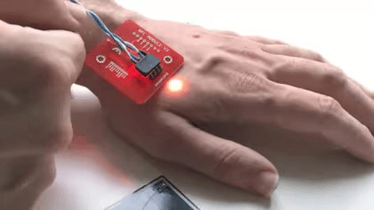

| Cada vez que Patrick paumen paga algo en una tienda o en un restaurante causa un revuelo. Este hombre de 37 años no necesita una tarjeta bancaria o su teléfono celular para pagar. En su lugar, simplemente pone su mano izquierda cerca del lector de tarjetas sin contacto y se realiza el pago. |
 Patrick Paumen tiene un microchip bajo la piel de su mano izquierda y se enciende cuando entra en contacto con un punto de pago electrónico. |
"¡Las reacciones que recibo de los cajeros no tienen precio!" dice Paumen, un guardia de seguridad de los Países Bajos. Puede pagar con la mano porque en 2019 le implantaron un microchip de pago sin contacto debajo de la piel. |
El lado oscuro de la tecnologíaNada Kakabadse, profesora de política, gobernanza y ética en la Escuela de Negocios Henley de la Universidad de Reading, también se muestra cautelosa sobre el futuro de los chips integrados más avanzados. "Hay un lado oscuro en la tecnología que puede dar lugar al abuso. Para aquellos que no aman la libertad individual, abre nuevas y seductoras
perspectivas para el control, la manipulación y la opresión ", dice Kakabadse. |
"El procedimiento duele tanto como cuando alguien te pellizca la piel" , dice Paumen. La primera vez que se implantó un microchip en un ser humano fue en 1998, pero para su uso comercial solo estuvo disponible durante la última década. |
|